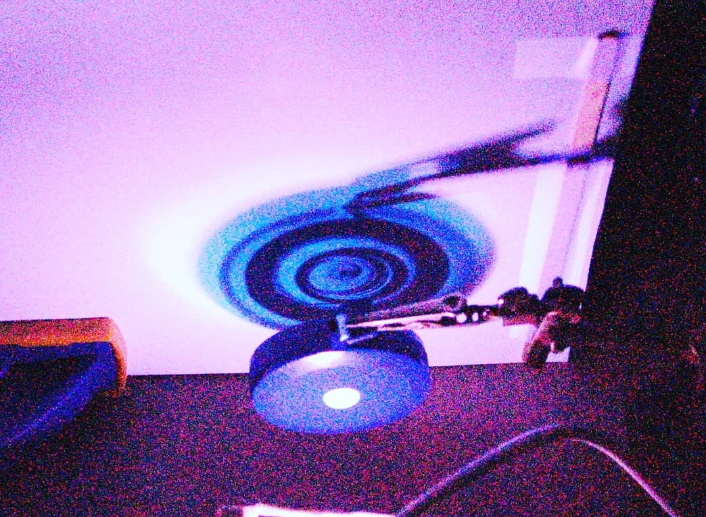
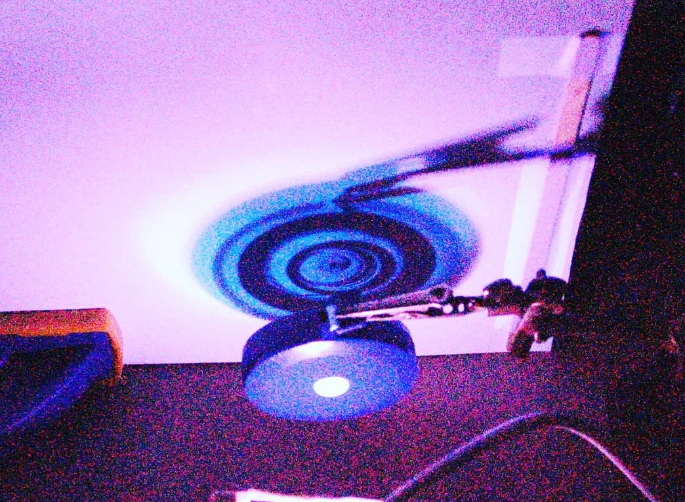

Introduction
X rays have always fascinated me. As a little kid, the ability to see through objects seemed like a real-world supepower,
and captured my attention. So naturally, many years later, when I stumbled across a homemade X-ray machine, I sought to construct my own.
Several Resources were used to make the machine. The user "radhoo" in this
forum post seems to be one of the first people online to make an X-ray machine using "ordinary" vacuum tubes, rather than utilizing expensive
special-purpose X-ray tubes. As a result, many other builds seem to stem from his. Here are some other resources I used:
Instructable by "stoppi71"
Guide by Erik Taylor
Article by "Dangerous Labratories"
Construction
The heart of the X-ray machine is a circuit that creates High voltage using parts from an old fashioned TV. The TVs were found in the trash around the block, and had the parts extracted.
Some examples of the type of TV used in this project.
The machine design involves a ZVS driver circuit that powers an AC flyback transformer that is fed through a Cockroft-Walton Multiplier
Circuit to increase and multiply the volatge.
The high voltage output from the Cockroft-walton multiplier is then connected to the xray tube.
ZVS driver circuit and Cockroft-Walton Multiplier circuit schematics
The "x-ray tube" utilized is an old 2c2s
Soviet vacuum tube sourced from ebay. My first few attempts at the X-ray machine used American-made vacuum tubes. Ironically,
the Soviet tubes functioned better as X-ray tubes because they were more poorly constructed than their American counterparts, so my attempts
after that used Soviet tubes.
Lead shielding from United Nuclear was purchased for protection. A long wire connected to a switch also
served as a "remote" for the circuit to offer additional protection. Later, I also added an arduino-controlled camera trigger so that I could
more easily control the picture quality of the X-ray machine. The camera was set to a long exposure with the widest aperature to capture the most light.
Photo of my "Xray machine"
Results
Here are some pictures taken from my Home-made Xray machine:
 
